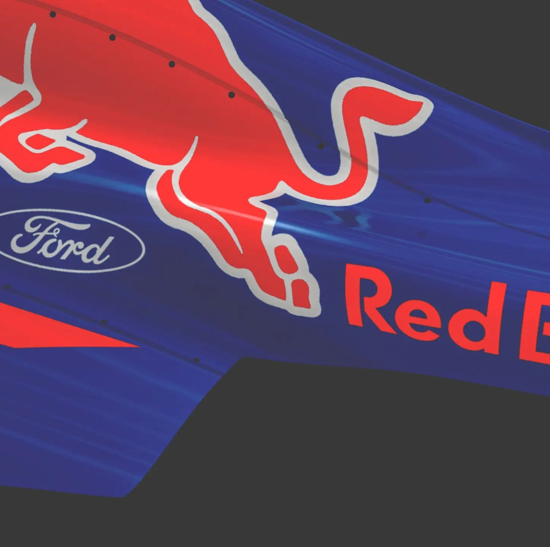

A passionate programmer and car enthusiast with great communication skills.
I'm currently working on a safe and anonymous chat application. It is going to feature end-to-end practical encryption managed from the devices themselves so that not even the server owners can understand whatever you are talking about.
As you might understand i have a big passion for cars and anything that has an engine

The English course, an unexpected gift from my father who initially had no interest in pursuing it, turned out to be a transformative experience that significantly changed my life for the better.
Although my father might not have harbored a personal inclination towards the course, his decision to pass it on to me inadvertently became a catalyst for personal growth and development. Engaging with the English language not only sharpened my communication skills but also broadened my horizons, fostering a newfound appreciation for literature, culture, and diverse perspectives.
This unexpected journey instilled in me the ability to articulate thoughts with clarity and precision, proving to be an invaluable asset in both academic and professional spheres. Beyond its practical applications, the English course became a source of self-discovery, unlocking doors to a world of knowledge and opportunities.
Another big passion of mine is coding and i hope i can make it my job in the future. as of now (12/5/2023) i'm still in high school and i plan of studying computing in university.
Programming has been my passion since i was 12 and i wrote my first bash code. I always found it interesting, the ability to tell the machine what to do and the need to be as precise as possible in order to make it work, plus even if it's actually a very frustrating thing to do, because in 99% of times stuff either doesn't work and you don't know why or it works but you still don't know why.
This is always a difficult question for any developer on the planet, because most of us have the impostor complex, which means we all feel like we don't actually know anything but instead we feel like just lieing about our abilities. Apart from that, there are some things that i must recognise i can do, like pyhton programming, especially logic and computation, i got the hand of that, i've been working on that for quite a while and right now im able to understand what i think it's good part of any python code.
I'm also quite proficent in javascript and c++ even tho there is still a long way to go and im definitely not ready for using it in a real world environment
You can reach me through the following channels: